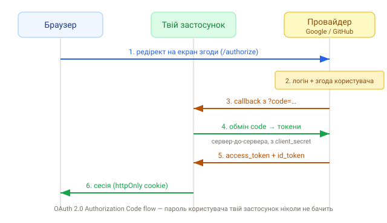

1. Навіщо «Вхід через Google»
Кнопка «Увійти через Google» зручна для користувача (немає ще одного пароля) і безпечніша для тебе: ти ніколи не бачиш його пароль. Замість цього Google підтверджує особу й повертає твоєму застосунку доказ входу. Стандарт, що це описує, — OAuth 2.0, а надбудова для автентифікації — OpenID Connect (OIDC).
- OAuth 2.0 — протокол делегованого доступу: дати застосунку доступ до ресурсів без передачі пароля;
-
OpenID Connect — шар поверх OAuth саме для автентифікації:
додає
id_tokenз інформацією про користувача.
2. Дійові особи
- Resource Owner — користувач;
- Client — твій застосунок;
- Authorization Server — провайдер (Google/GitHub), що логінить і видає токени;
- Redirect URI — адреса твого застосунку, куди провайдер поверне користувача.
3. Authorization Code Flow — по кроках
Найпоширеніший і найбезпечніший потік для веб-застосунків:

-
користувач тисне «Увійти через Google» — застосунок редіректить його на
/authorizeпровайдера; - на боці провайдера користувач логіниться й дає згоду на запитані дані;
-
провайдер повертає користувача на твій Redirect URI з тимчасовим
codeу query; -
твій сервер обмінює цей
codeна токени (запит ізclient_secret, сервер-до-сервера); - провайдер віддає
access_tokenіid_token; - застосунок створює сесію й ставить cookie.
Чому спершу code, а вже потім токен? Тому що code проходить
через браузер (видимий), а обмін на токен відбувається з сервера з
секретом і по захищеному каналу. Так токен ніколи не «світиться» в URL.
4. Токени OIDC
-
access_token— для доступу до API провайдера (напр. отримати профіль); -
id_token— JWT з «claims» про користувача (sub,email,name); саме він потрібен для автентифікації; -
refresh_token— щоб отримати новий access-токен, коли старий сплив (про це в останньому уроці).
5. Scopes і PKCE
Scope — які саме дані/права запитує застосунок (openid email profile). Проси мінімум необхідного. Для клієнтів без секрету (SPA, мобілки) додають
PKCE — механізм, що захищає обмін коду від перехоплення. Бібліотеки
(Auth.js, Supabase) вмикають PKCE автоматично.
client_secret — тільки на сервері, ніколи в браузерному
коді чи репозиторії. У фронтенд-змінні
(VITE_…/NEXT_PUBLIC_…) секрети не кладуть — вони потрапляють
у бандл.
6. Реєстрація застосунку в провайдера
Щоб усе запрацювало, треба зареєструвати застосунок у консолі провайдера й отримати
client_id + client_secret і вказати дозволений Redirect URI:
// .env (сервер)
AUTH_GOOGLE_ID=xxxxx.apps.googleusercontent.com
AUTH_GOOGLE_SECRET=xxxxx
// Redirect URI у консолі Google:
// http://localhost:3000/api/auth/callback/googleДалі бібліотека (Auth.js) збудує весь потік за нас — переходимо до неї.